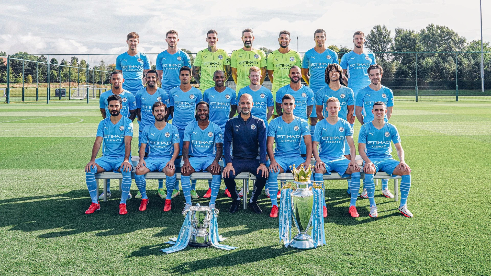

Team and Manager
Names of Players and Manager from left to right
Back Row left: John Stones, Aymeric Laporte, Ederson, Carson, Steffen, Rodri, Ruben Dias Middle Row left: Gabriel Jesus, Riyad Mahrez, Fernandinho, Joao Cancelo, De Bruyne, Kyle Walker, Nathan Ake,Jack Grealish Front Row left: Gundogan, Bernardo, Raheem Sterling, MANAGER Pep Guardiola, Torres, Zinchenko, Phil Foden